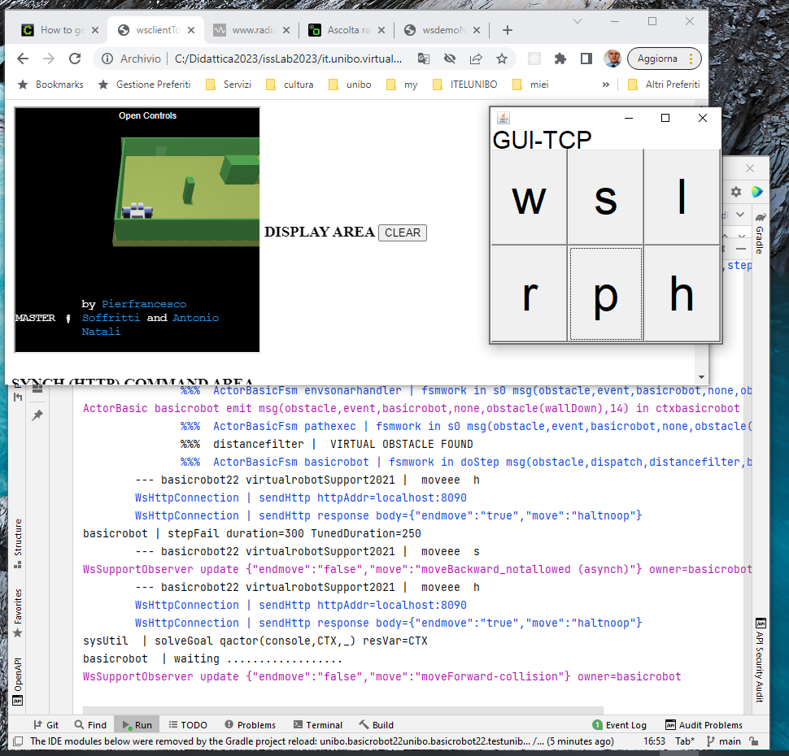

Verso-sistemi-distribuiti¶
History¶
1 - Parte preliminare¶
VirtualRobot23: sistema che permette di muovere un robot virtuale usando interazioni sincrone via HTTP e asincrone via WebSocket.
Esempi di uso naive di WEnv: esempi di programmi Java che usano VirtualRobot23 senza l’uso di supporti.
TestMovesUsingHttp: Esegue mosse di base del robot inviando via
HTTPcomandi espressi in cril.TestMovesUsingWs: Esegue mosse di base del robot inviando via
WebSocketcomandi espressi in cril
unibo.basicomm23.http.HTTPCommApache: un primo supporto per le interazioni via
HTTP, introdotto durante lo sviluppo di Applicazione1-HTTP-Core.unibo.supports.VrobotHLMovesHTTPApache: supporto che fornisce mosse di alto livelo del robot usando unibo.basicomm23.http.HTTPCommApache.
unibo.appl1.http.Application1HTTPCore: realizzazione dei requisiti di Applicazione1 basata su unibo.basicomm23.http.HTTPCommApache.
2 - Interconnessione¶
unibo.basicomm23.interfaces.Interaction2021: verso un concetto astratto di Interconnessione come canale di comunicazione bidirezionale definito nel progetto unibo.basicomm23, che fornisce implementazioni per diversi Tipi di protocollo.
unibo.basicomm23.enablers.EnablerAsServer: Server che ouò ricevere messaggi via TCP, UDP, CoaP, introdotto per permettere che componenti remoti (come la console di figura) possano inviare comandi ad una nostra applicazione supporti. Prima facilitazione per realizzare sistemi distribuiti, definiti nel progetto unibo.basicomm23, sezione Abilitatori di comunicazione.
Interaction2021-HTTP-WS: realizzazione dell’Interconnessione con protocolli HTTP (HttpConnection) e WebSocket (WsConnection). In WsConnection sono di particolare rilevanza i metodi String request(String msg) e void stepAsynch(int time, IWsInfoHandler stepok, IWsInfoHandler stepko).
unibo.basicomm23.utils.ConnectionFactory: factory che permette di costruire un oggetto di supporto alla comunicazione che implemeneta l’interfaccia unibo.basicomm23.interfaces.Interaction2021 usando uno dei protocolli definiti da Tipi di protocollo.
it.unibo.virtualRobot2023.EsperimentiHTTP: esprimenti di interazione con WEnv usando ConnectionFactory e HttpConnection.
it.unibo.virtualRobot2023.EsperimentiWS: esprimenti di interazione con WEnv usando ConnectionFactory e WsConnection.
3 - Supporti HL per robot¶
unibo.supports.VrobotHLMovesHTTP: supporto (evoluzione di unibo.supports.VrobotHLMovesHTTPApache) che fornisce mosse di alto livelo del robot usando HttpConnection per le interazioni con WEnv.
unibo.supports.VrobotHLMovesWS: supporto che fornisce mosse di alto livelo del robot, usando WsConnection per le interazioni con WEnv.
unibo.supports.VrobotHLSupportFactory: factory che costruisce un oggetto di supporto alla comunicazione con il robot che implemeneta l’intefaccia IVrobotMoves usando
HTTPoWS.
4 - L’Applicazione1¶
Abbiamo introdotto due versioni di un’applicazione che muove il VirtualRobot23 lungo i bordi perimetrali (privi di ostacoli) di una stanza dell’ambiente virtual WEnv:
Application1CoreConn, che interagisce con VirtualRobot23 in modo sincrono, usando il protocollo
HTTPe HttpConnection.
Applicazione1-WS, che interagisce con VirtualRobot23 in modo asincrono, usando le
WebSockete WsConnection.- unibo.appl1.interaction.Application1CoreConn: realizzazione dei requisiti di Applicazione1
basata su Application1AbstractBase che usa VrobotHLSupportFactory.
Comandi con risposta¶
L’applicazione (in entrambe le versioni) implementa operazioni ad alto livello per il robot, definite dall’interfaccia unibo.common.IVrobotMoves.
Tutte le operazioni sono realizzate da metodi privi di risposta, tranne la mossa step di movimento in avanti per un tempo prefissato definita da un metodo con la seguente signature:
boolean step(int time) throws Exceptionstep viene realizzata in due modi diversi:
con interazioni sincrone (step: implementazione) all’interno di un supporto per le interazioni con WEnv basato su
HTTPunibo.supports.VrobotHLMovesHTTP;con interazioni asincrone all’interno di un supporto per le interazioni con WEnv basato su
WebSocketunibo.supports.VrobotHLMovesWS.
5 - Supporti HL per robot con planner¶
- unibo.appl1.map.VrobotHLMovesWSPlanned, che realizza le mosse del robot in modo da modificare la
(rappresentazione della sua) posizione su una mappa della stanza.
6 - Applicazioni con planner¶
Application1ExploreByColumn¶
Esplora la stanza con la seguente strategia:
usa attemptStep per muovere il robot lungo la prima colonna;
appena trova un ostacolo, ruota di 180° e torna (usando
reachPos) alla riga iniziale lungo il percorso appena fatto;si sposta sulla colonna successiva, se esiste, e ripete il procedimento. Se è giunto a wallRigth torna in HOME
Per realizzare questo comportamento, Application1ExploreByColumn extends Application1AbstractBase e definisce
public void doJob() throws Exception { walkAlongAColumn(); }
Il metodo walkAlongAColumn usa attemptStep di
VrobotHLMovesWSPlanned e reachPos` di
Application1AbstractBase.
Application1ExploreSpiral¶
Esplora la stanza con la seguente strategia:
usa attemptStep per cercare di raggiungere la cella 1,1;
qualunque sia l’esito, torna a HOME usando
reachPosdi Application1AbstractBaseripete cercando di arrivare a 2,2 e così via
Application1ExploreSpiral estende Application1AbstractBase e definisce
public void doJob() throws Exception { dospiral(); }
7 - basicrobot¶
Obiettivo: introdurre un componente software che esegue comandi di spostamento di un DDR-robot in ‘modo indipendente dalla tecnologia’ con cui è realizzato del robot (virtuale o reale).
Progetto unibo.basicrobo22¶
Un supporto per modello di robot (virtual, mbot, nano )
- Un modello qak:
System /* -trace */ basicrobot22
Lo step¶
Si intende sperimentare la realizzazione della mossa step(T) in diversi modi:
in modo sincrono, usando una operazione simile a VrobotHLMovesWS.request
in modo asincrono, seguendo il modello di VrobotHLMovesWS.stepAsynch ma trasformando l’esito positivo in un messaggio (dispatch)
stepdonee l’esito negativo in un messaggio (dispatch)stepfailin modo asincrono, considerando lo
step(T)completato con successo se, entro il tempoT, non si percepisce alcun messaggio (dispatch)obstacleinviato dal supporto robotVirtual.virtualrobotSupport23State doStep{ onMsg( step : step( T ) ){ [# StepTime = payloadArg(0).toLong() #] updateResource [# "step(${StepTime})" #] } memoCurrentTime StartTime run unibo.robot.robotSupport.move( "w" ) //moves a real robot forever !!! } Transition t0 whenTimeVar StepTime -> stepDone whenMsg obstacle -> stepFail State stepDone{ run unibo.robot.robotSupport.move( "h" ) ... } State stepFail{ run unibo.robot.robotSupport.move( "h" ) ... }
robotVirtual.virtualrobotSupport23¶
Unisce
robotVirtual.virtualrobotSupport2021erobotVirtual.WsSupportObserverin quanto estende ApplAbstractObserver definito in unibo.basicomm23Realizza
stepinvocandorequest(forwardStepMsg)che aspetta il risultato (endmoveinupdate) che può esseretrue/falseRealizza
move(w)mandando unforwardlongtimeMsgsulla WsConnection al VirtualRobot.La parte observer emette un evento
obstaclealla detection di una collisione
Per sperimentare:
{kind=link}
Verso altre applicazioni¶
A questo punto, ampliamo i requsiti applicativi, secondo la sequenza che segue:
L’applicazione deve poter inviare a un componente remoto informazioni sul suo stato di elaborazione, se un tale componente lo chiede.
L’applicazione deve poter inviare informazioni sul suo stato ad osservatori remoti (se esistono).
L’applicazione deve poter interrompere il suo
walkAtBoundaryquando il robot passa davanti a un sonar presente nella stanza, segnalare a un operatore il suo stato di elaborazione e la distanza dal sonar e deve poter ripartire quando l’operatore invia un comandoresume.
Stato di elaborazione¶
Per stato di elaborazione, intendiamo in questa fase il numero di passi effettuati e il numero di passi ancora da compiere (se è possibile dedurlo) per completare un giro.
Stato del robot¶
Per statodel robot, intendiamo infomazione sulla posizione e direzione corrent edal robot. Si veda anche Appl1: Stato del robot.
Richiesta di informazione sullo stato¶
Problematica: non basta eseguire un comando remoto; occorre anche inviare informazioni di risposta.
Il metodo elaborate dell’handler dei mesaggi, può inviare messaggi di risposta al chiamante sulla
conn, di tipo Interaction2021.La risposta può essere confezionata introducendo un nuovo metodo (
getState) nel POJO applicativoL’invio della risposta dovrebbe avvenire in un nuovo Thread, per evitare blocco dell’handler e quindi del EnablerAsServer
Aggiornamento di osservatori sullo stato¶
Problematica: l’applicazione deve poter sapere se ha osservatori remoti e con quali protocolli comununicare con loro.
Un modo per risolvere il problema è il seguente: l’applicazione può ricevere (con protocollo prefissato) un messaggio di registrazione di un observer remoto e memorizzare la connessione su cui inviare gli update.
Un’altra soluzione è introdurre un observer locale dell’applicazione che invia informazioni su una topic prefissata di un broker MQTT.
Rilevazione da sonar¶
Problematica: l’operatore deve utilizzare un componente capace
di ricevere informazioni da parte (di un observer) della applicazione e capace di inviare il comando resume.
Dotiamo l’applicazione di una WEB interface in modo che un operatore possa accedervi usando un browser. In pratica sostituiamo il nostro EnablerAsServer con un WebServer (come Tomcat) e sfruttiamo piattaforme cone Node o SpringBoot.
Un nuovo obiettivo¶
Mano a mano che i requisiti si ampliano, notiamo che lo scambio di messaggi diviene parte del core-business applicativo, e che queste nuove, fondamentali parti vengono gestite all’interno dei server (come Tomcat) che abilitano le comunicazioni o di altri componenti come gli handler dei messaggi.
Sorgono ora altri obiettivi:
sostituire gli handler quali Appl1MsgHandler con enti attivi (attori), capaci di gestire in modo ‘nativo’ (FIFO) messaggi inseriti nella coda di ingresso loro associata
passare da attori message-driven ad attori che operano come un Automa a stati finiti (FSM).
In altre parole:
E’ possibile impostare l’applicazione come attore che opera come un FSM le cui transizioni sono connesse alla ricezione di un messaggio?
Cha vantaggi se ne ottengono?
xxx IApplication1¶
Entrambe le versioni dell’applicazione sono concepite come un POJO oserervabile che implementa la seguente interfaccia:
public interface IApplication1 {
public void start() throws Exception;
public void stop();
public void resume();
public void addAnObserverOnAppl(IObserver o);
public void addAnObserverOnWsconn(IObserver o);
}
start: che attiva l’applicazione (nel Thread corrente);
stop: che ferma l’applicazione, se questa esegue walkBySteppingWithStop;
resume: che riattiva l’applicazione.
Ogni applicazione definisce anche:
walkAtBoundary, che pilota il robot a viaggiare per passi (walkByStepping e walkBySteppingWithStop) lungo i bordi perimetrali (privi di ostacoli) della stanza virtuale.
Per fermarsi e ripartire, l’applicazione fa uso del semaforo stopped
(si veda walkBySteppingWithStop).
Il tramite tra il server e l’applicazioe è costituto da un oggetto di classe Appl1MsgHandler, il cui metodo elaborate viene invocato alla ricezione di un messaggio da EnablerAsServer, che in questo modo delega a un componente applicativo il compito di gestire il messaggio.
La gstione del messaggio start induce l’handler a invocare il metodo walkAtBoundary() dell’applicazione
all’interno di un nuovo Thread, per evitare il blocco del server e l’impossibilità di elaborare
altri messaggi (nel caso particolare, lo stop).
xxx Application1AbstractBase¶
Application1AbstractBase implementa IApplication1 e definisce i seguenti metodi protected, usando una istanza
di VrobotHLMovesWS:
abstract void doJob() throws Exception: comportamento definito da classi specializzate
boolean reachPos(int stepT, int x, int y) throws Exception
void completeTheMap() throws Exception
boolean executePlan(List<Action> actions) throws Exception
void backToHome() throws Exception